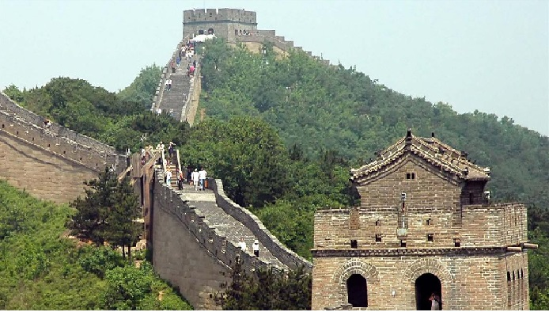
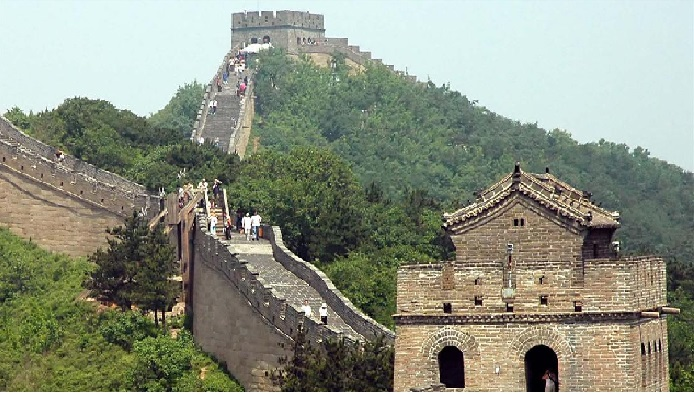

The Colosseum or Coliseum (/kɒləˈsiːəm/ kol-ə-SEE-əm), also known as the Flavian Amphitheatre (Latin: Amphitheatrum Flavium; Italian: Anfiteatro Flavio [aŋfiteˈaːtro ˈflaːvjo] or Colosseo [kolosˈsɛːo]), is an oval amphitheatre in the centre of the city of Rome, Italy. Built of concrete and sand,[1] it is the largest amphitheatre ever built. The Colosseum is situated just east of the Roman Forum. Construction began under the emperor Vespasian in AD 72,[2] and was completed in AD 80 under his successor and heir Titus.[3] Further modifications were made during the reign of Domitian (81–96).[4] These three emperors are known as the Flavian dynasty, and the amphitheatre was named in Latin for its association with their family name